Archivo de la colección Planeta DeAgostini México, 2023-2025
La biblioteca
La biblioteca de la gran dama del misterio
Y cientos de personajes...
Una colección para convertirte en detective.
Este catálogo está ordenado por fecha de salida para mostrar cómo se publicó entre 2023, 2024 y 2025.
Los resúmenes editoriales completos deben consultarse en la página oficial de Planeta DeAgostini. La información disponible en este archivo se presenta como referencia y no sustituye la sinopsis editorial de cada obra.
La tranquilidad de un crucero por el Nilo se ve destrozada por el descubrimiento de que Linnet Ridgeway recibió un disparo en la cabeza. Era joven, elegante y hermosa, una chica que lo tenía todo, hasta que perdió la vida.
Y no quedó ninguno
· Tomo 3
En su asiento del vagón de primera clase para fumadores, el juez Wargrave, retirado hacía poco de los tribunales, mordisqueaba su cigarro mientras leía con interés la sección política de The Times.
El asesinato de Roger Ackroyd
· Tomo 4
La verdad, por fea que sea en sí misma, siempre es curiosa y hermosa para quienes la buscan.
Se anuncia un asesinato
· Tomo 5
Las personas con un resentimiento contra el mundo siempre son peligrosas. Parecen pensar que la vida les debe algo.
La casa torcida
· Tomo 6
En los casos de asesinato, como sabes, Charles, lo obvio suele ser la solución correcta.
Cinco cerditos
· Tomo 7
Las mujeres observan de un modo inconsciente mil detalles íntimos, sin saber lo que hacen. Sus subconscientes mezclan esas cositas unas con otras y a eso le llaman intuición.
Muerte en la vicaría
· Tomo 8
Acababa de trinchar unos pedazos de carne de buey, bastante dura por cierto, cuando al volver a sentarme observé, con un espíritu que mal cuadraba a mi hábito, que quien asesinara al coronel Protheroe prestaría un buen servicio a la humanidad.
El misterio de la guía de ferrocarriles
· Tomo 9
Es difícil saber exactamente dónde empieza esta historia, pero he elegido cierto miércoles, a la hora de la comida, en la vicaría.
Un cadáver en la biblioteca
· Tomo 10
Durante años, me he planteado escribir lo que podríamos llamar una variación sobre alguno de estos tópicos. La biblioteca debía ser corriente; el cadáver, en cambio, debía aparecer como un elemento muy inverosímil y sensacional.
El misterioso caso de Styles
· Tomo 11
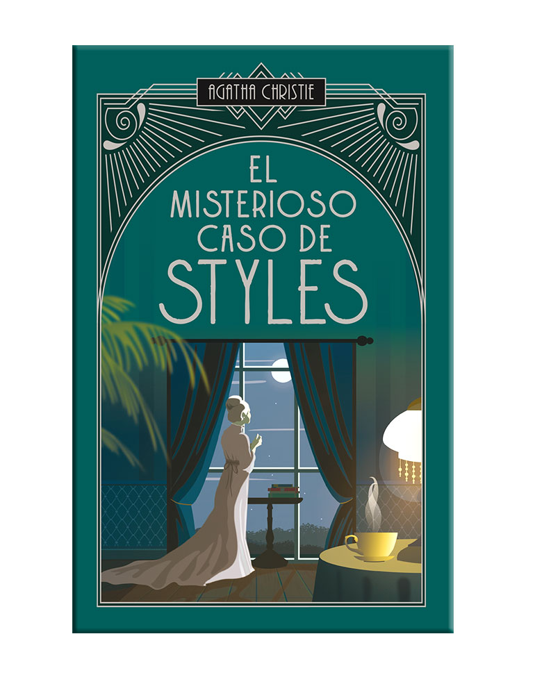
El revuelo que despertó el que en su momento fue conocido como 'El caso de Styles' se ha calmado. Sin embargo, en vista de la resonancia mundial que tuvo, mi amigo Poirot y la propia familia me han pedido que escriba toda la historia.
Cianuro espumoso
· Tomo 12
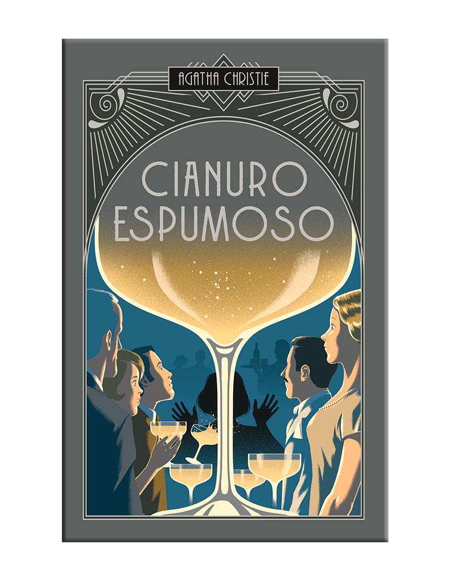
Iris Marle estaba pensando en su hermana Rosemary. Durante cerca de un año había intentado deliberadamente desterrar de sus pensamientos el recuerdo de Rosemary.
Muerte bajo el sol
· Tomo 13
En mi opinión no hay puerto de mar al sur de Inglaterra más atractivo que Saint Loo, y comprendo el entusiasmo de sus huéspedes estivales, que lo llaman la reina de las playas.
El espejo se rajó de lado a lado
· Tomo 22
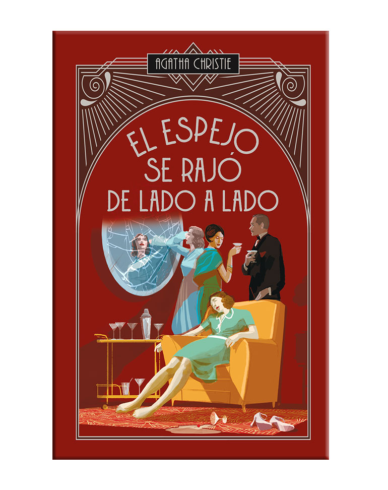
Miss Jane Marple estaba sentada junto a la ventana que se abría al jardín, en otros tiempos un motivo de orgullo para su dueña. Ya no era así.
Némesis
· Tomo 23
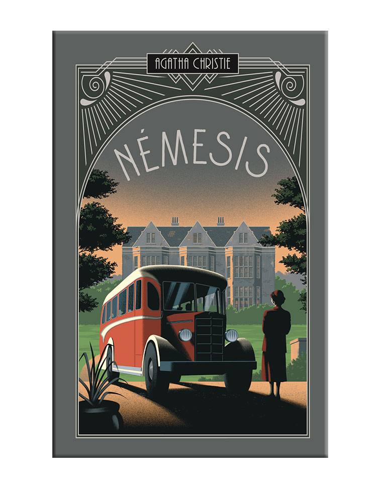
Miss Jane Marple tenía la costumbre de leer por las tardes su segundo periódico. Cada mañana recibía en su casa dos periódicos.
El misterio de Pale Horse
· Tomo 24
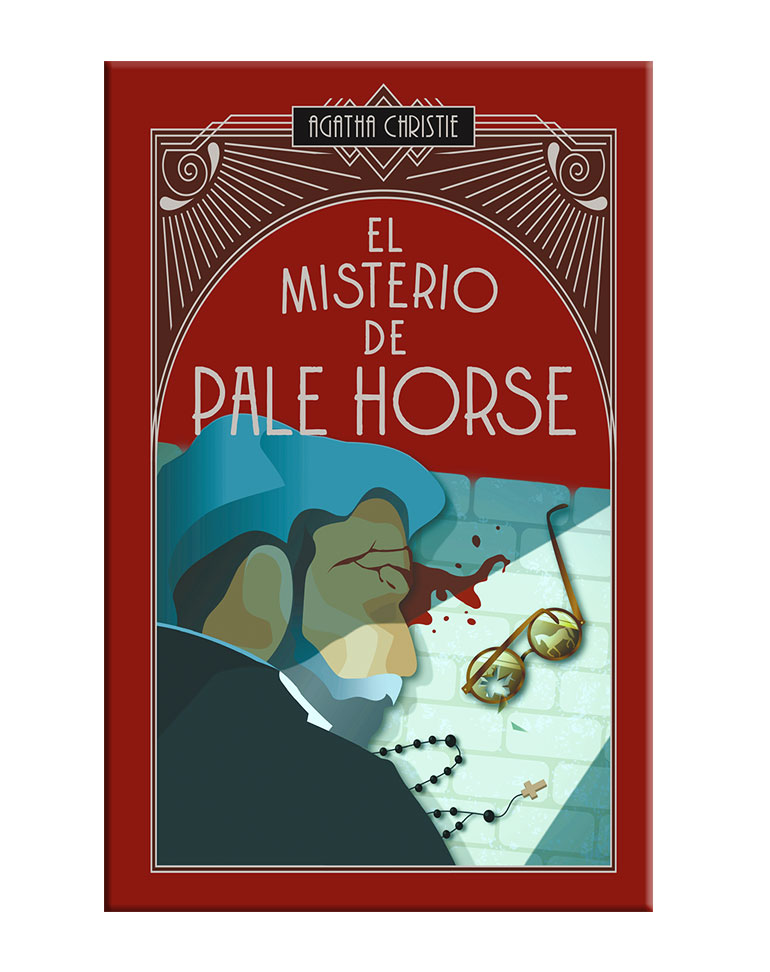
A mi juicio hay dos maneras de acercarse a este extraño asunto de Pale Horse. A pesar del dicho del Rey Blanco es difícil hacerlo con simplicidad.
Misterio en el Caribe
· Tomo 28
Fíjese usted en todo cuanto se habla de Kenia —dijo el comandante Palgrave—. Gente que no conoce aquello en absoluto, haciendo toda clase de peregrinas afirmaciones.
Tragedia en tres actos
· Tomo 29
Mr. Satterthwaite se sentó en la terraza de Nido de Cuervos y contempló cómo su anfitrión, sir Charles Cartwright, subía por el sendero que conducía al mar.
Noche eterna
· Tomo 30
En el fin está el principio… Ésa es una cita que he oído muchas veces. No suena mal, pero en realidad, ¿qué significa?
Un crimen dormido
· Tomo 27
Gwenda Reed permanecía de pie, al borde del muelle, temblando de frío. Los muelles, los cobertizos de la aduana y todo lo que alcanzaba a ver de Inglaterra se balanceaban suavemente.
Después del funeral
· Tomo 25
El viejo Lanscombe, con su andar vacilante, fue de una habitación a otra subiendo las persianas. De vez en cuando sus ojillos de reumático miraban a través de los cristales.
Inocencia trágica
· Tomo 26
Anochecía cuando llegó al transbordador. Podría haber estado allí mucho antes. La verdad era que lo había retrasado todo lo posible.
El hombre del traje color castaño
· Tomo 32
Era alrededor de medianoche cuando un hombre atravesaba la plaza de la Concordia. A pesar del magnífico abrigo que cubría su raquítico cuerpo, había en él algo ruin y miserable.
El truco de los espejos
· Tomo 33
Tras alejarse unos pasos del espejo, Mistress Van Rydock exhaló un suspiro. 'Bueno, tendrá que ser este —murmuró—. ¿Te parece bien, Jane?'
Sangre en la piscina
· Tomo 34
Cierto viernes, a las seis y trece de la mañana, Lucy Angkatell abrió los párpados, contempló el nuevo día con unos ojos azules de sorprendente tamaño.
Cita con la muerte
· Tomo 14
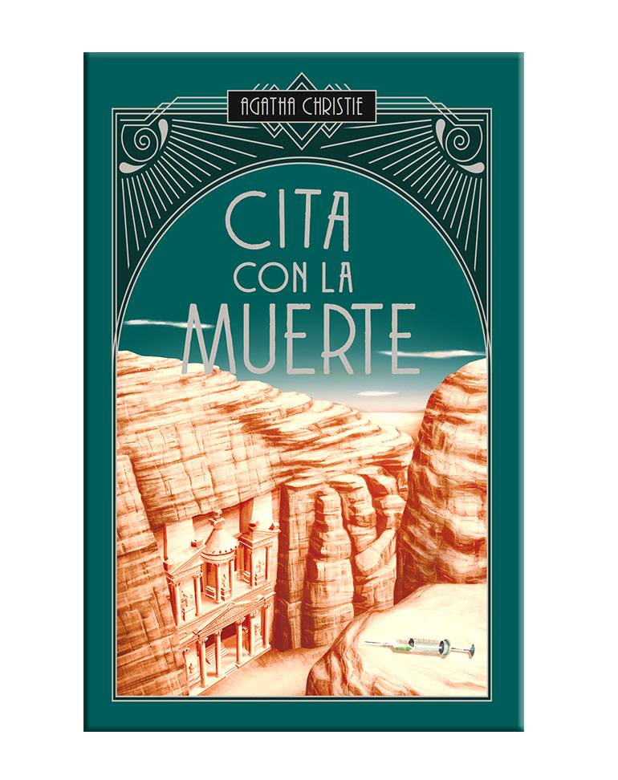
¿No comprendes que es necesario matarla? La pregunta flotó en la quietud de la noche, dio la impresión de que permanecía un momento inerte en el aire y finalmente se alejó hacia el mar Muerto.
Peligro inminente
· Tomo 15
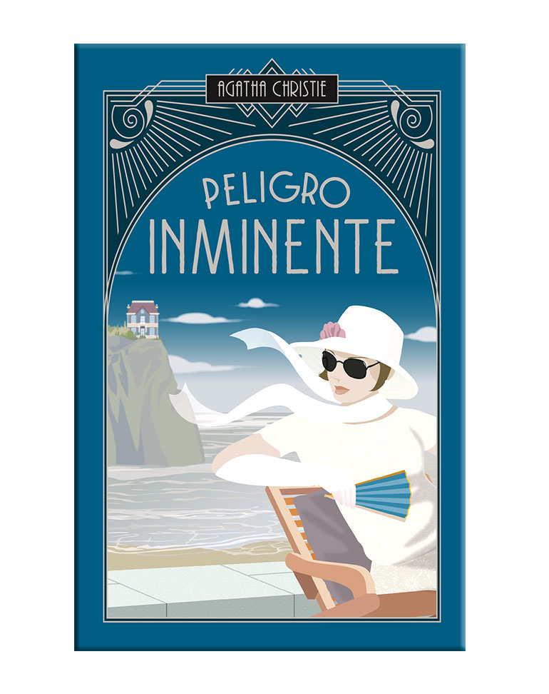
El sol de septiembre caía de lleno en el aeródromo de Le Bourget mientras los pasajeros cruzaban el campo y subían al correo aéreo Prometheus.
Muerte en las nubes
· Tomo 16
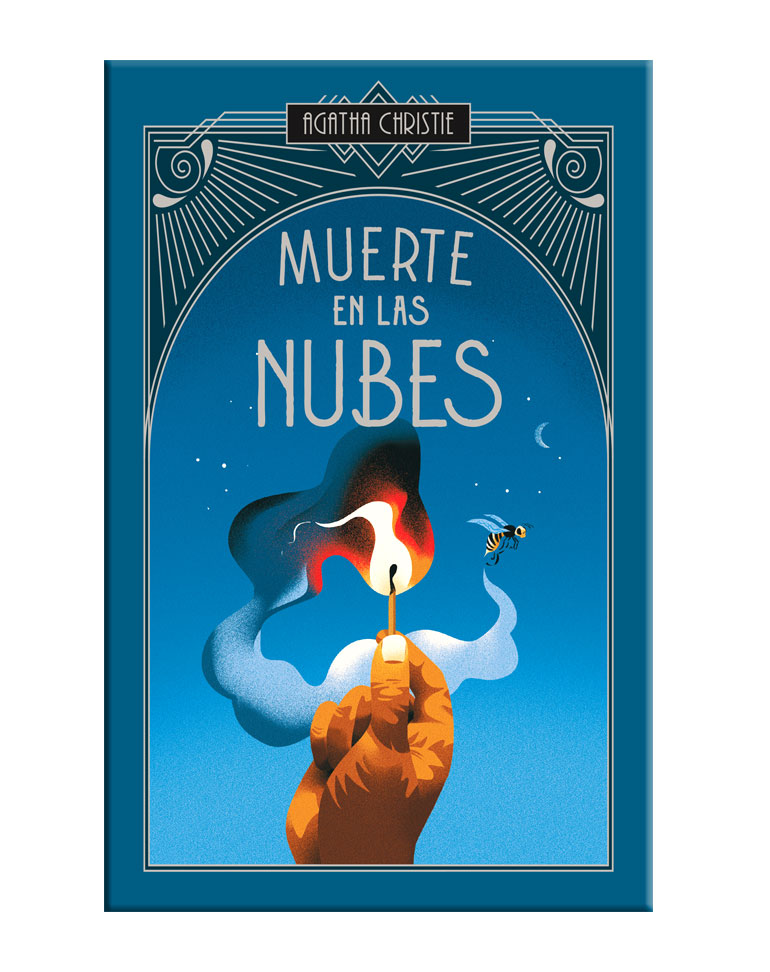
Jane Grey fue de las primeras en entrar y ocupó el asiento número 16. Algunos pasajeros entraron por la puerta central y, pasando por delante de la angosta repostería y de los dos lavabos, fueron a ocupar la parte delantera del aparato.
Asesinato en Mesopotamia
· Tomo 17
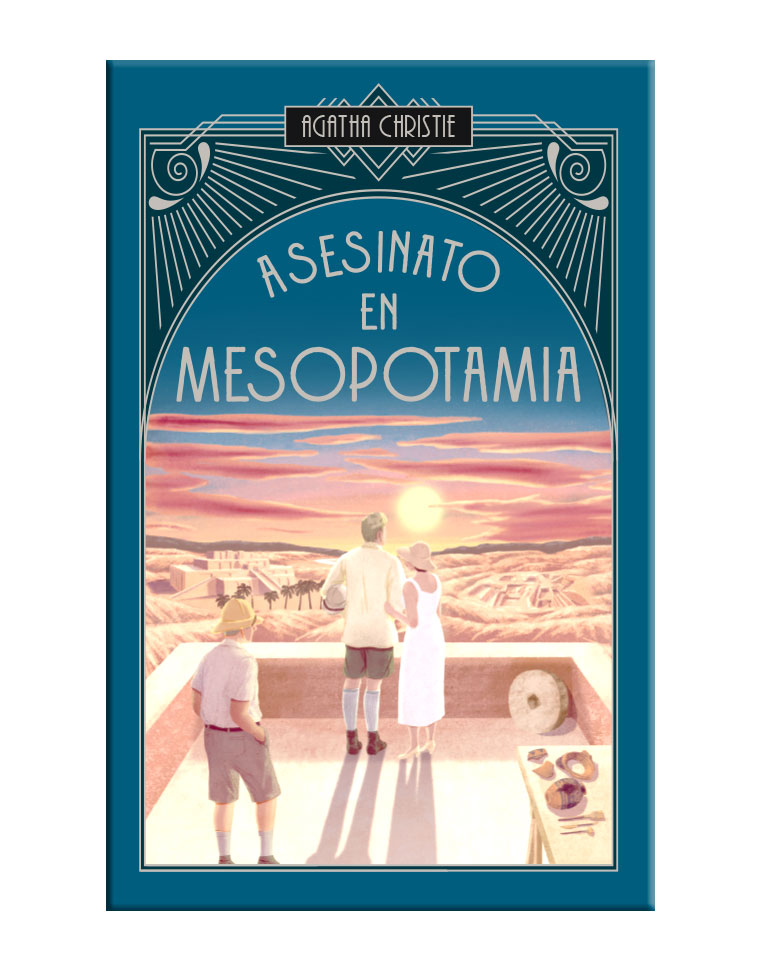
Los hechos cuya crónica se incluye en esta narración ocurrieron hace unos cuatro años. Determinadas circunstancias han hecho necesario, en mi opinión, que se hiciera público un relato íntegro de los mismos.
El tren de las 4:50
· Tomo 18
Mrs. McGillicuddy corría desalentada por el andén tras el mozo que le llevaba la maleta. Era baja y gruesa, y el mozo alto y de paso largo.
Cartas sobre la mesa
· Tomo 19
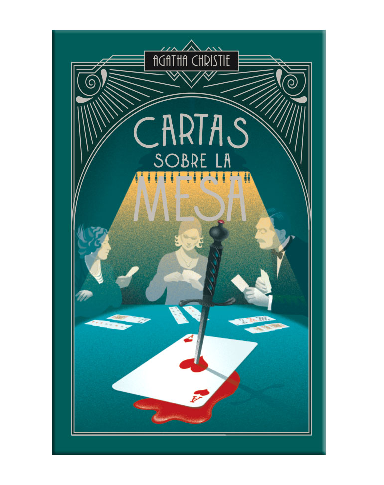
Existe la idea, bastante generalizada, de que una novela policíaca tiene cierto parecido a una carrera de caballos, pues como ésta, toman la salida un determinado número de participantes.
El caso de los anónimos
· Tomo 20
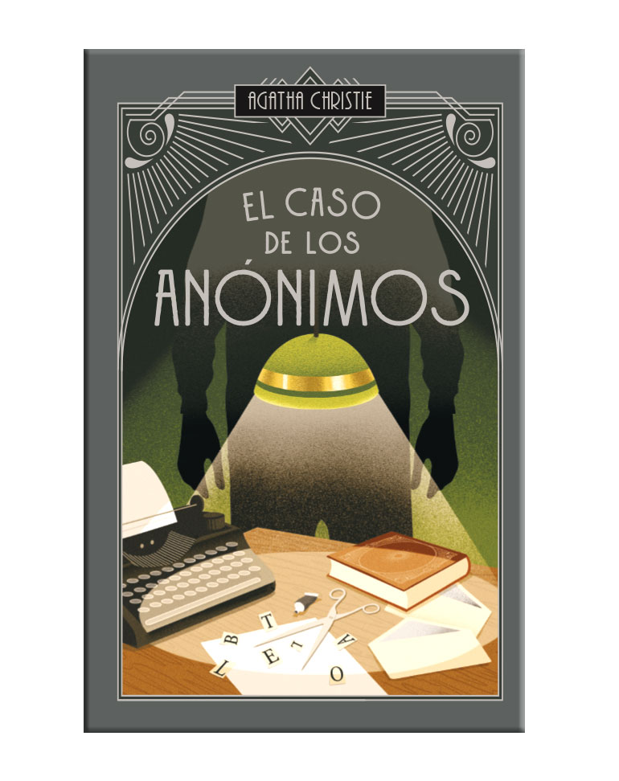
Siempre resulta agradable plantear un tema clásico y ver lo que puede hacerse con él. En esta ocasión, el tema de la pluma que destila veneno sigue las líneas generales de otros casos bien conocidos.
Telón: El último caso de Poirot
· Tomo 21
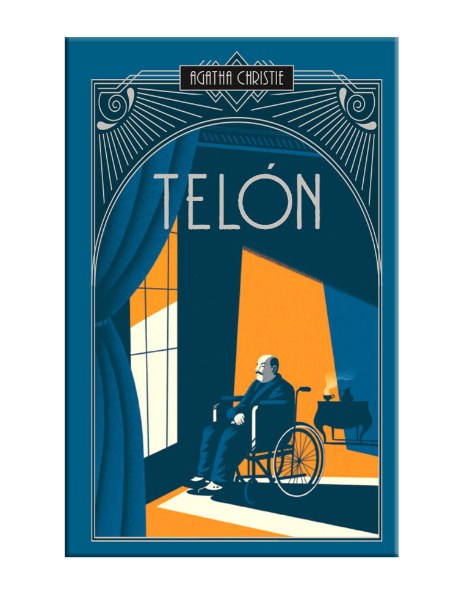
¿Quién no ha sufrido alguna vez un repentino sobresalto al revivir una vieja experiencia o al sentir una antigua emoción? 'He hecho esto antes…' ¿Por qué esas palabras siempre nos conmueven tan profundamente?
Matar es fácil
· Tomo 35
¡Inglaterra! ¡Otra vez Inglaterra después de tantos años! ¿Cómo se la iba a encontrar? Luke Fitzwilliam se hizo esa pregunta al descender por la pasarela del barco.
El misterio del tren azul
· Tomo 31
Nadina, la bailarina que había conquistado París, se meció al compás de los aplausos e hizo reverencias una y otra vez.
La muerte visita al dentista
· Tomo 36
Mr. Morley no estaba de muy buen humor aquella mañana. Se quejó de la calidad del jamón y del café, diciendo que tenía aspecto de barro líquido.
Una visita inesperada
· Tomo 37
Poco antes de medianoche de un gélido día de noviembre, los jirones de niebla oscurecían parte de una carretera oscura, estrecha y rodeada de árboles en Gales del Sur.
Un puñado de centeno
· Tomo 38
A Miss Somers le tocaba hacer el té. Somers era la más nueva y la menos eficiente de las mecanógrafas. Ya no era joven y su rostro, que revelaba una ligera preocupación, recordaba al de una oveja.
¿Por qué no le preguntan a Evans?
· Tomo 39
Bobby Jones empuñó el palo de golf, tocó ligeramente la bola, inclinó despacio el palo hacia atrás y luego dio un golpe fuerte con la rapidez de un rayo.
Los cuatro grandes
· Tomo 40
Conozco gente que lo pasa bien en cualquier travesía del canal de la Mancha, personas que se sientan tranquilamente en una silla de cubierta.
Hacia cero
· Tomo 41
Casi todas las personas que se hallaban reunidas alrededor de la chimenea eran abogados o tenían interés por la Ley.
Navidades trágicas
· Tomo 42
Stephen se levantó el cuello del abrigo mientras avanzaba apresuradamente por el andén. Una tenue niebla llenaba la estación.
Un triste ciprés
· Tomo 43
Elinor Katherine Carlisle: está usted acusada de haber asesinado a Mary Gerrard el veintisiete de julio pasado. ¿Se confiesa usted culpable o inocente?
La venganza de Nofret
· Tomo 44
Renisenb contemplaba el Nilo. Oía en la distancia las voces de sus hermanos Yahmose y Sobek, que discutían sobre si determinados diques necesitaban ser reparados o no.
La muerte de Lord Edgware
· Tomo 45
El público es sumamente olvidadizo. El asesinato de George Alfred Saint Vincent Marsh, cuarto barón de Edgware, que tan intensamente apasionó a la opinión pública, ha pasado ya al olvido.
Destino desconocido
· Tomo 46
El hombre sentado tras el escritorio desplazó el pesado pisapapeles de cristal diez centímetros a su derecha. Su rostro mostraba una expresión más impasible que pensativa.
En el Hotel Bertram
· Tomo 47
En el corazón del West End, hay un gran número de rincones discretos, desconocidos para casi todos excepto para los taxistas.
Tercera muchacha
· Tomo 48
Norma estaba sentada en el suelo, con las piernas cruzadas, y escribía en un cuaderno. De vez en cuando se mordía el lápiz y fruncía el ceño.
El cuadro
· Tomo 49
El mayordomo abrió la puerta del estudio y anunció con voz solemne: 'Sir Claude Amory'.
El testigo mudo
· Tomo 50
Bella Arundell, la actriz, era una mujer de mediana edad, pero todavía muy atractiva. Sus ojos oscuros brillaban con inteligencia.
El secreto de Chimneys
· Tomo 51
El joven que conducía el coche deportivo se inclinó hacia adelante y aumentó la velocidad. Le gustaba correr.
Un gato en el palomar
· Tomo 52
Lady Stubbs suspiró y se recostó en la silla. 'Es tan difícil saber qué hacer con todo esto', dijo.
Miss Marple y los 13 problemas
· Tomo 53
El Club de los Martes se reunía todos los martes por la noche en la casa de Miss Marple.
Intriga en Bagdad
· Tomo 54
Victoria Jones se despertó con la sensación de que algo iba mal. Se sentó en la cama y miró a su alrededor.
El templete de Nasse-House
· Tomo 55
El templete se alzaba al final del jardín, junto al agua. Era una estructura blanca y elegante.
El misterio de las siete esferas
· Tomo 56
Anthony Cade se despertó con la sensación de que algo había cambiado. La habitación estaba en silencio.
La señora McGinty ha muerto
· Tomo 57
La señora McGinty había muerto de un modo muy prosaico: alguien la había golpeado en la cabeza.
El misterio de Sans Souci
· Tomo 58
El Sans Souci era un pequeño hotel en la costa sur. Los huéspedes llegaban y se iban.
Los elefantes pueden recordar
· Tomo 59
Los elefantes pueden recordar, dijo Poirot. Es un hecho bien conocido.
El misterioso señor Brown
· Tomo 60
El señor Brown era un hombre misterioso. Nadie sabía realmente quién era.
Asesinato en el campo de golf
· Tomo 61
El campo de golf se extendía ante ellos, verde y bien cuidado. Era una mañana tranquila.
El misterio de Sittaford
· Tomo 62
La mesa se movió lentamente. Las letras del alfabeto aparecieron una por una.
Los relojes
· Tomo 63
Había relojes por todas partes. Doce relojes en total, todos marcando horas diferentes.
Los últimos casos de Miss Marple
· Tomo 64
Miss Marple observaba el mundo desde su ventana. Todo había cambiado tanto.
Asesinato en la calle Hickory
· Tomo 65
La casa de la calle Hickory era una residencia estudiantil tranquila. Hasta esa mañana.
La telaraña
· Tomo 66
Clarissa Hailsham-Brown estaba sola en la casa. Su marido había salido.
Las manzanas
· Tomo 69
Las manzanas doradas brillaban en el árbol. Era una tarde de otoño perfecta.
Matrimonio de sabuesos
· Tomo 70
Tommy y Tuppence estaban casados. Pero eso no significaba que fueran a dejar de investigar.
Pleamares de la vida
· Tomo 67
Hércules Poirot se había retirado. Cultivaba calabazas en su jardín.
Parker Pyne investiga
· Tomo 68
Mr. Parker Pyne era un hombre de negocios muy particular. Su especialidad: la felicidad.
Poirot investiga
· Tomo 71
Hércules Poirot examinó la escena del crimen con atención. Cada detalle contaba.
Pasajero para Frankfurt
· Tomo 72
El avión despegó hacia Frankfurt. Entre los pasajeros había un espía.
Primeros casos de Poirot
· Tomo 73
Estos fueron los primeros casos que resolvió Hércules Poirot en Inglaterra.
Los trabajos de Hércules
· Tomo 74
Doce trabajos, como los de Hércules. Doce casos extraordinarios para Poirot.
Asesinato en Bardsley Mews y otras historias
· Tomo 75
Bardsley Mews era un callejón tranquilo en Londres. Hasta que ocurrió el asesinato.
El Pudding de Navidad y otras historias
· Tomo 76
La Navidad es tiempo de familia, alegría... y a veces, de misterio.
Café solo
· Tomo 77
Un café solo. Eso fue todo lo que pidió. Pero detrás de esa orden había un secreto.
El enigmático Mister Quin
· Tomo 78
Mr. Quin aparecía siempre en los momentos más inesperados. Como un fantasma.
Problema en Pollensa y otras historias
· Tomo 79
Pollensa era un lugar tranquilo en Mallorca. Hasta que llegó el problema.
Un Dios solitario y otros relatos
· Tomo 80
Un Dios solitario observaba desde el cielo. Los humanos seguían cometiendo errores.
Testigo de cargo y otras historias
· Tomo 81
El testigo de cargo subió al estrado. Su testimonio cambiaría todo.
La puerta del destino
· Tomo 82
La puerta del destino se abrió lentamente. ¿Qué había detrás?
El misterio de Listerdale y otras historias
· Tomo 83
Listerdale había desaparecido. Sin dejar rastro. Eso era lo extraño.
Autobiografía de Agatha Christie (vol. 1)
· Tomo 84
Nací en Torquay, en 1890. Ésta es mi historia.
Autobiografía de Agatha Christie (vol. 2)
· Tomo 85
He vivido una vida extraordinaria. Llena de misterio, amor y escritura.